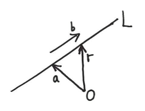
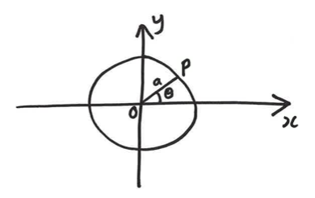
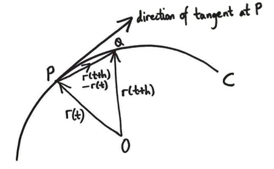

Curves
For the purpose of this module, a curve is a one-dimensional object in three-dimensional space. Imagine a hula hoop or a rope. In fact, we’ll generally assume:
- The curve is differentiable - that is, there are no sharp kinks.
- The curve does not self-intersect.
Curves have many important applications in maths and physics, for example, the path of an electron in a magnetic field, or the boundary of a circular disc.
Parameterisations
In two dimensions, you’re used to seeing a curve described as \(y = f(x)\). In three dimensions, if we tried to do this \[ z = f(x,y) \] then we’d have a surface, not a curve (more on this next week). Instead, we use a parameterisation for each of the three co-ordinates \[ x = f(t), y = g(t), z = h(t)\] where \(f\), \(g\) and \(h\) are some functions, and \(t\) is the parameter. Occasionally we’ll use a different letter for the parameter, like \(\theta\) or \(s\), but I’ll try to stick to \(t\) usually.
Generally we’ll write the parameterisation in terms of the position vector \({\mathbf{r}}\): \[ {\mathbf{r}} = {\mathbf{r}}(t).\]
It’s also super important to give the possible range for the parameter \(t\).
Parameterisations are not unique. The same curve can be described in infinitely many different ways.
Here are two simple examples. Actually both of these are effectively 2D, but in class and later in the module we’ll see more 3D examples.
Example: Straight line
The simplest example of a curve is a straight line, which you saw in MA12001. If \({\mathbf{c}}\) is some point on the line and \({\mathbf{s}}\) is the direction of the line, then \[ {\mathbf{r}} = {\mathbf{a}} + {\mathbf{b}}t,\quad t\in\mathbb{R}\] is a parameterisation for the line. In this case, \(t\) can have any value because the line is infinitely long.

Think: What’s a parameterisation for the line segment between two points \({\mathbf{p}}\) and \({\mathbf{q}}\)?
In MA12001 you saw that this line has parameterisation \[ {\mathbf{r}} = {\mathbf{p}} + ({\mathbf{q}}-{\mathbf{p}})t. \] For a line segment, we need to limit the range of \(t\). Notice that when \(t=0\), \({\mathbf{r}}={\mathbf{p}}\), and when \(t=1\), \({\mathbf{r}}={\mathbf{q}}\), so we have to choose \[ 0\leq t \leq 1. \]
Example: Circle
A circle is a curve. Let’s find a parameterisation for the circle of radius \(a\) in the \(x-y\) plane, centred at the origin. \[ {\mathbf{r}} = [a\cos \theta, a\sin \theta, 0],\quad 0\leq \theta < 2\pi. \] Here we’re using \(\theta\) as the parameter, because it’s an angle. The \(z\) co-ordinate is always zero, because we’re in the \(x-y\) plane. Notice that, for any \(\theta\), \[ x^2 + y^2 = a^2\cos^2 \theta +a^2\sin^2 \theta = a^2, \] which is indeed a circle of radius a centred at the origin. You should get used to using \(\sin\) and \(\cos\) like this to parameterise circles.

Tangent vectors
A tangent vector is a vector which points `along’ a curve at a given point on it. If we imagine we’re moving along the curve, then the tangent vector tells us the direction we’re travelling at any point in time. We write it as \({\mathbf{T}}\).
So it’s the infinitesimal displacement from the current point to a future point (and remember displacements are position vectors subtracted) \[{\mathbf{T}} = \lim_{\delta\to 0}\frac{{\mathbf{r}}(t + \delta) - {\mathbf{r}}(t)}{\delta} = \frac{d {\mathbf{r}}}{d t}\]

Tangent vectors are not unique: only the direction is actually meaningful, the magnitude depends on the parameterisation.
Often we will want a unit (i.e. magnitude 1) tangent vector, which we define as
\[ \hat{{\mathbf{T}}} = \frac{{\mathbf{T}}}{|{\mathbf{T}}|} = \frac{1}{\left|\frac{d {\mathbf{r}}}{d t}\right|} \frac{d {\mathbf{r}}}{d t}. \]
Example: Circle
Consider the circle of radius \(a\) in the \(x-y\) plane, centred at the origin. Find the unit tangent vector to the curve at the point \({\mathbf{r}} = \left[\frac{a}{\sqrt{2}}, -\frac{a}{\sqrt{2}}, 0\right]\).
Above, we found the parameterisation \[ {\mathbf{r}} = [a\cos \theta, a\sin \theta, 0],\quad 0\leq \theta < 2\pi. \]
First we should check the given point actually lies on the curve, and find the parameter.
We need \[ [a\cos \theta, a\sin \theta, 0] = \left[\frac{a}{\sqrt{2}}, -\frac{a}{\sqrt{2}}, 0\right] \] A little bit of trigonometry or guessing gives \(\theta=-\pi/4\). But this doesn’t fit within our range, so we add \(2\pi\) to get \[ \theta = 7\pi/4. \]
The tangent vector is \[ {\mathbf{T}}(\theta) = \frac{d {\mathbf{r}}}{d \theta} = \left[-a\sin\theta, a\cos\theta, 0\right], \] so at our point we have \[ {\mathbf{T}}(7\pi/4) = \left[\frac{a}{\sqrt{2}}, \frac{a}{\sqrt{2}}, 0\right]. \]
The question asked for a unit vector, so we need \(\hat{{\mathbf{T}}} = \frac{{\mathbf{T}}}{|{\mathbf{T}}|}\).
\[ |{\mathbf{T}}| = \sqrt{\left(\frac{a}{\sqrt{2}}\right)^2 + \left(\frac{a}{\sqrt{2}}\right)^2 + 0^2} = a, \] which finally gives \[ \hat{{\mathbf{T}}}(7\pi/4) = \left[\frac{1}{\sqrt{2}}, \frac{1}{\sqrt{2}}, 0\right]. \]
The length of a curve
The first really interesting bit of vector calculus in this module: how do we calculate the length of a curve? By the length we mean: imagine you have a piece of string and you lay it along your curve. Then you lay it out flat and measure the string.
We call this the arc length of the curve, because it can be curved, like an arc, I guess?
Your first thought might be that it’s realted to the parameter, but this is incorrect: for a circle, we usually parameterise by \(0\leq \theta < 2\pi\) but you know that the length of the curve (the circumference) is \(2\pi a\) where \(a\) is the radius.
Instead, we need to integrate. The formula is \[ \int_{t_0}^{t_1} \left| \frac{d {\mathbf{r}}}{dt}\right| dt \left( = \int_{t_0}^{t_1} \left| {\mathbf{T}}(t)\right| dt\right) \] Here the limits for the integral are chosen based on what part of the curve we want to measure the length of. In class I’ll go through a ‘derivation’ of this formula, but you should just learn it.
This is just a normal integral of a scalar in one variable. Later we’ll see more exotic integrals but you already know how to do these ones.
Example: the distance between two points
Find the total arc-length of the line segment between two points \({\mathbf{p}}\) and \({\mathbf{q}}\).
Above we saw that the parameterisation is \[ {\mathbf{r}} = {\mathbf{p}} + ({\mathbf{q}}-{\mathbf{p}})t,\quad 0\leq t \leq 1. \]
So we need to calculate \[ \int_{0}^{1} \left| \frac{d {\mathbf{r}}}{dt}\right| dt = \int_{0}^{1} \left| ({\mathbf{q}}-{\mathbf{p}})\right| dt. \] Here \(t\) doesn’t appear in the integrand, so we can just simplify \[ \int_{0}^{1} \left| ({\mathbf{q}}-{\mathbf{p}})\right| dt = \left| ({\mathbf{q}}-{\mathbf{p}})\right| \int_{0}^{1} dt. \] Whenever you see this ‘empty’ integral, you can think of it as integrating 1. So \[ \int_{0}^{1} \left| ({\mathbf{q}}-{\mathbf{p}})\right| dt = \left| ({\mathbf{q}}-{\mathbf{p}})\right|. \]
This says that the integral is equal to the magnitude of the displacement vector \(({\mathbf{q}}-{\mathbf{p}})\). Which was kind of obvious – it’s just the distance between the two points.
Longer example
To conclude this part of the notes, let’s see a more complicated example.
Find the total arc-length of the curve which is parameterised as \[ {\mathbf{r}}(t) = \left[ \cos t, \sin t, t \right], \quad 0\leq t\leq 4\pi. \]
Think: What is this shape?
In \(x\) and \(y\), it just traces out a circle twice. But as it does so, the \(z\) co-ordinate increases. So this is a helix, like a slinky.
Step 1: Calculate the tangent vector
\[ {\mathbf{T}}(t) = \frac{d{\mathbf{r}}}{dt} = \left[-\sin t, \cos t, 1\right]. \]
Step 2: Find its magnitude
\[ \left|{\mathbf{T}}\right| = \sqrt{(-\sin t)^2+(\cos t)^2 + 1^2} = \sqrt{2}. \]
Step 3: Integrate this
Here we need to remember that the limits of the integral are the limits of the parameterisation \[ \int_0^{4\pi} \sqrt{2} dt = 4\pi \sqrt{2}. \]